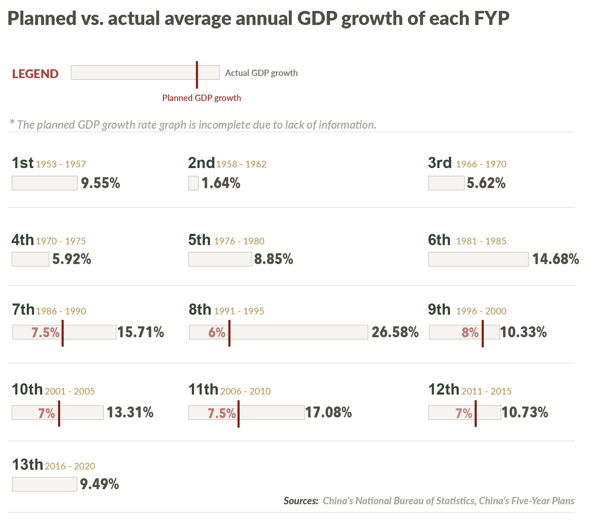
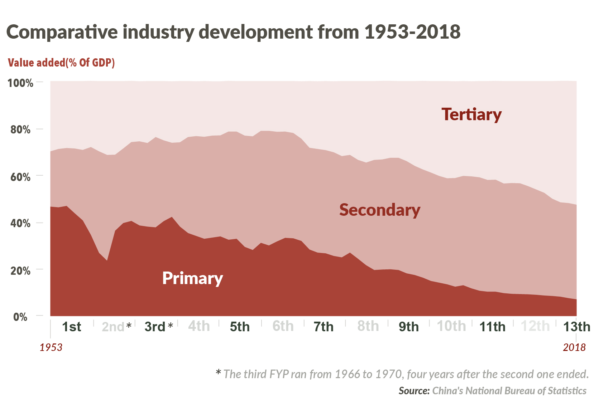
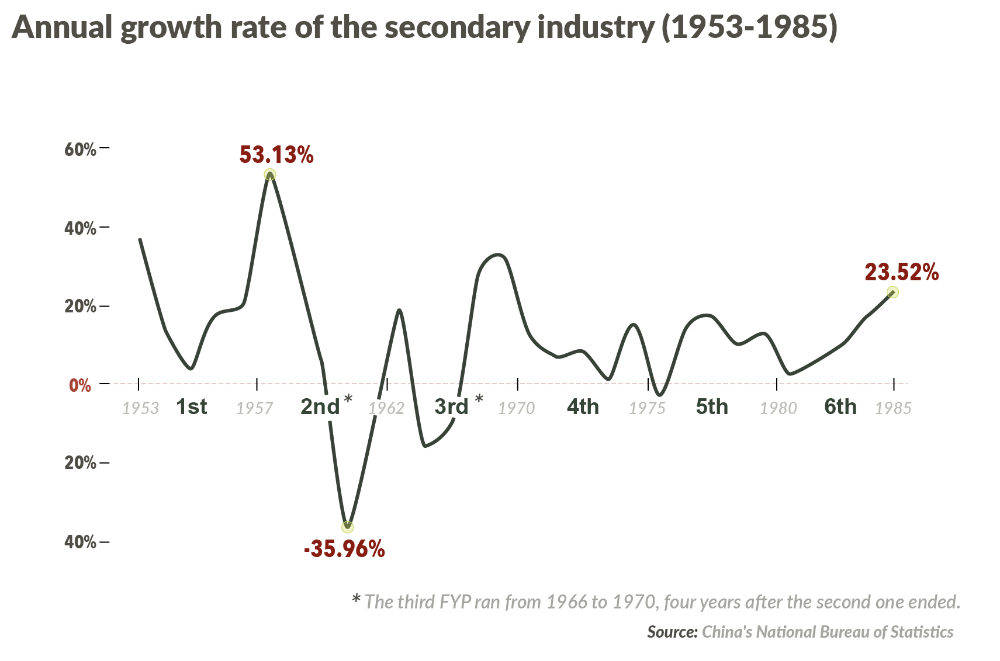
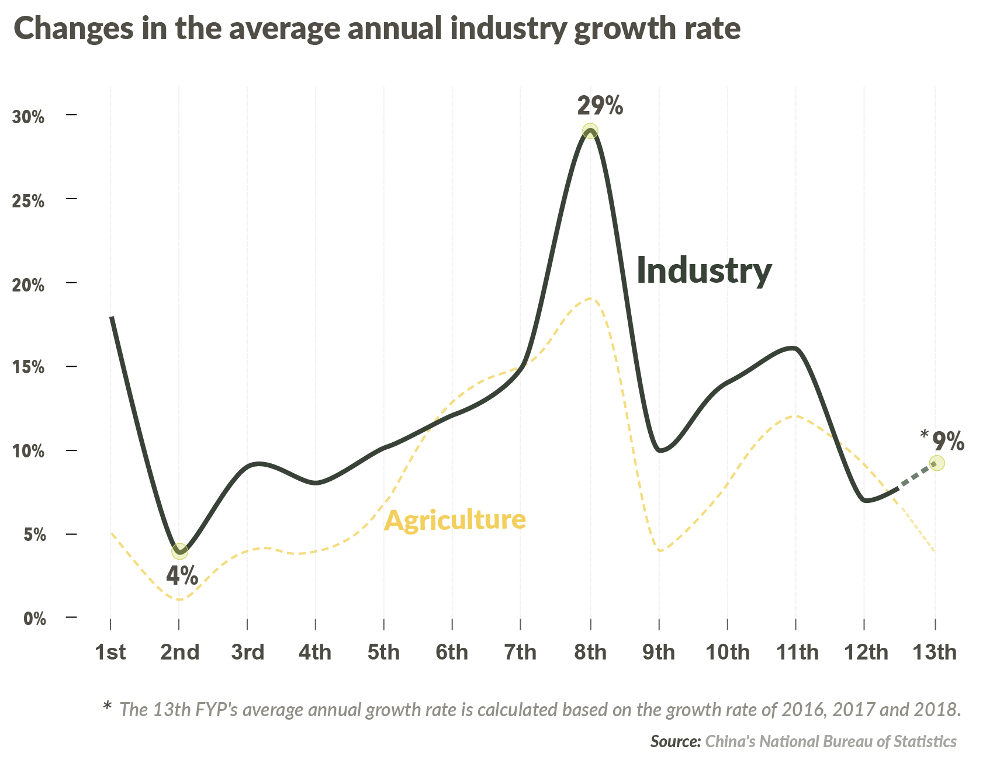
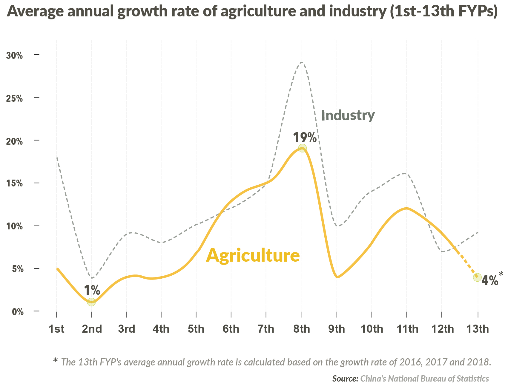
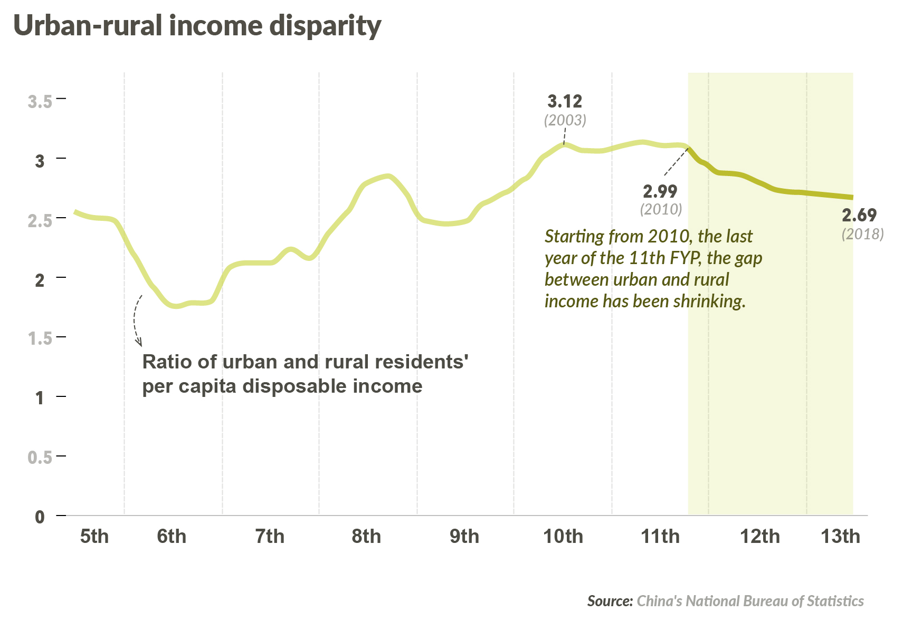

L O A D I N G
CGTN recommends using Chrome or Firefox for a better browsing experience.
*CGTN recommends exploring the detailed database on the computer.
1953
I
1957
1986
VII
1990
1991
VIII
1995
1996
IX
2000
2001
X
2005
2006
XI
2010
2011
XII
2015
2016
XIII
2020
China's Five-Year Plan (FYP) is one of the country's most importantpolicy blueprints. Drawn up every five years since 1953, it sets medium-term goals for China's social and economic development and is the barometer against which progress is measured.
2020 is the last year of the 13th Five-Year Plan, which was adopted on March 15, 2016. The 14th plan (2021–2025) is currently being developed.
China's Five-Year Plan (FYP) is one of the country's most importantpolicy blueprints. Drawn up every five years since 1953, it sets medium-term goals for China's social and economic development and is the barometer against which progress is measured.
Here shows the text of China's FYPs*.
The first FYP, being the foundation for future such policies, is longer than all the rest.
By comparison, the number of policies drop for several years after 1953 but start to climb consistently in 2006.
*The second to sixth FYPs are excluded, as they are not available.
China's Five-Year Plan lays out specific economic targets, such as GDP growth ratesand social development goals in areas such as healthcare and the environment over five years.
The primary objectives include economic reform and industrial restructuring, which has paved the path for establishing and improving the socialist market economy and formed the foundation for transforming the mode of economic growth and optimizing economic structure.
China's Five-Year Plan lays out specific economic targets, such as GDP growth ratesand social development goals in areas such as healthcare and the environment over five years.
An average annual GDP growth rate was set between the Seventh and the 12th FYPs, as an important indicator measuring national economy for the next five years.
Data show that all targets were fulfilled and most actual growth rates far exceeded the predicted numbers.
Data show that all targets were fulfilled and most actual growth rates far exceeded the predicted numbers.
The three industries' share of the GDP shows a smaller proportion of the primary sector, a bigger shares of the tertiary industry and a steadily growing secondary sector in the overall picture.
The industrial sector has been the primary driver of China's economic development and the focus to shift China's economic structure into a higher quality growth pattern.
Here we highlight all the text related to industry.
As we can see, the related content accounts for nearly a half of the First FYP.
As China diversifies its approach to national development, the number of policies directly related to industry have fallen.
The industrial sector has been the primary driver of China's economic development and the focus to shift China's economic structure into a higher quality growth pattern.
Here shows the titles of the chapters or sections on industry.
During the First FYP, China focused on developing its heavy industry.
The growth rate of the secondary industry reached its peak after the First FYP period, and tended to fluctuate from year to year after that.
"Made in China 2025," a 10-year national strategy unveiled in 2015, was put in the 13th FYP in a bid to upgrade the country's manufacturing sector.
China is the world's largest agricultural economy, producing a fourth of the world's grains.
Content related to agriculture is highlighted. Most FYPs make fewer references to agriculture than industry.
China is the world's largest agricultural economy, producing a fourth of the world's grains.
Here shows the titles of the chapters or sections on agriculture.
Agriculture remains a vital sector in the national economy, though its share of China's GDP has been decreasing.
Plans for rural development appear in the second part of the 11th FYP, called "Construction of New Social Villages." In the subsequent FYPs, rural development plans make up a whole chapter and are listed at the top.
Plans for rural development appear in the second part of the 11th FYP, called "Construction of New Social Villages."
explore other sections....
"We take the capital construction of heavy industry as the focus of the First FYP for the development of the national economy and start with the 156 industrial projects the Soviet Union designed to help China."
"We will fully implement the 'Made in China 2025' action plan… to foster a new competitive edge in manufacturing."
"We will continue to give top priority to resolving the 'three rural issues,'… promote the construction of a new socialist countryside, and promote the sound development of urbanization."
"We take the capital construction of heavy industry as the focus of the First FYP for the development of the national economy and start with the 156 industrial projects the Soviet Union designed to help China."
"We will fully implement the 'Made in China 2025' action plan… to foster a new competitive edge in manufacturing."
"We will continue to give top priority to resolving the "three rural issues,"… promote the construction of a new socialist countryside, and promote the sound development of urbanization. "
"Establish a robust emergency mechanism for responding to public health emergencies and improve disease prevention and control and medical treatment capacity. Improve the condition of medical and public health institutions and strengthen the building of a professional contingent. "
"China will strengthen the prevention and control of major communicable diseases, strengthen port health and quarantine capacity and limit entry to keep out major communicable diseases. "
"China's legal framework shifted from focusing more on the static rules and systems of the law, a legal system, to one that aims to achieve social and justice by limiting public power and safeguarding private rights under the rule of law."
"The shift in approach is concretized in the terminology used to define the country's legal framework before and after the 10th FYP, which began in 2001."
"Since the 10th FYP, the phrase "a country based on the rule of law" replaces "a country with legal system" and the systems of the socialist rule of law, reflecting China's desire to achieve the overarching goal of modernizing the country's system and capacity for governance based on the rule of law."
Developing socialist democracy and improving the socialist rule of law is always a key topic in every FYP. Its purpose is to give full expression to the will of the people, protect their rights and interests, spark their creativity, and provide systemic and institutional guarantees to ensure the people run the country.
China's two key political systems, the National People's Congress and the Chinese People's Political Consultative Conference, also known as the annual "Two Sessions," and its system of community-level self-governance are first mentioned in the Eighth FYP.
"All scientific research institutions should strengthen their research on practical issues related to nation building. "
"China will increase its proportion of research and development expenditure to more than 1.5 percent of the GDP. "
"With scientific and technological innovation as the core and talent development as the support, we will integrate scientific and technological innovation with entrepreneurship and innovation to foster more innovation-driven, cutting-edge development. "
"Carbon dioxide emissions per unit of GDP will decrease by 17 percent... China must significantly reduce its energy consumption and CO2 emissions, as well as effectively regulate greenhouse gas (GHG) emissions. "
"We will strengthen the economic cooperation of the socialist bloc led by the Soviet Union, expand our trade with the Soviet Union and steadily increase our trade with the people's democratic countries.....We will consolidate state control of foreign trade to prevent capitalist attacks while protecting China's socialist structure."
"China will continue to reform the foreign trade management system and further promote foreign trade…. China will also further expand the operation rights of local governments and departments and relax restrictions on export-oriented enterprises to encourage them to develop foreign trade."
"To meet its commitment to joining the WTO, China will gradually lower tariffs according to the country's socioeconomic status and industrial structure. China will also gradually open up services such as banking, insurance, telecommunications, foreign trade, domestic trade and tourism."
"The growth of national defense and administrative costs must be properly controlled."
"We will adhere to the principles of state leadership, system innovation, market operation and civil-military compatibility, coordinate economic national defense construction, fully rely on and utilize social resources, improve national defense strength and military capabilities, and vigorously promote the open sharing of military and land resources as well as the mutual transfer of military and civilian technologies."
"Economic development remains the center of each FYP. Content on economic development and industrial restructuring is put on the top list of the targets and tasks for each FYP."
Data sources:China's Five-Year Plans (The second to sixth FYPs are excluded, as they are not available).
*Please note: The analysis in this project is based on the Chinese version of the Five-Year Plans.
Editors: Zhao Hong, Shi Tao, Le Tian
Copy Editor: Claudine Housen
Chief Editor: Chen Ran
Data Editors & Visualization: Qin Zhaoying, Zhou Rui, Shi Tao, Li Yixiao
Visual & Interactive Designer: Qin Zhaoying
Interactive Developer: Qin Zhaoying, Duan Huiran (Intern)
Senior Consultant: Xia Jixuan
Multimedia Producer: Xu Jiye
Producer: Chen Ran
Supervisor: Zhang Shilei
Copyright © 2020 CGTN. Beijing ICP prepared NO. 16065310-3